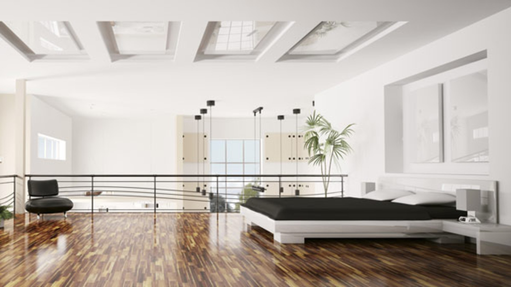
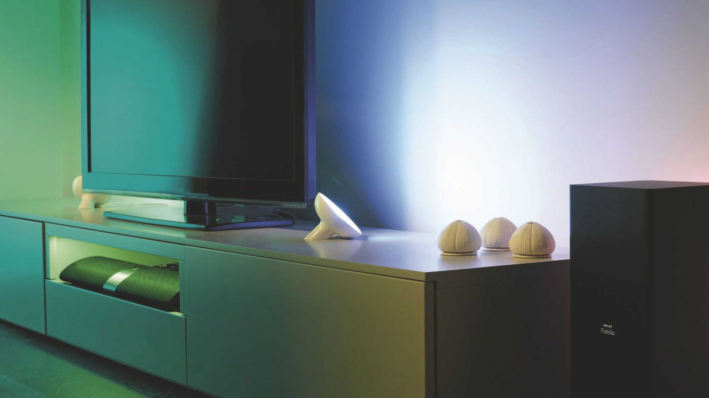
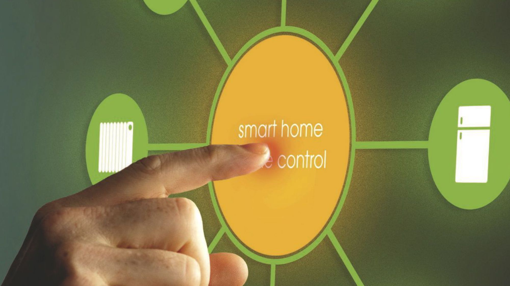
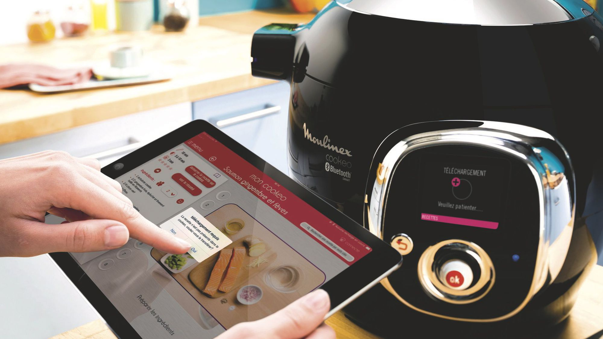

Équiper son appartement de domotique pour le piloter à distance depuis son iPhone ou iPad, c'est possible.

Volets, alarme, chauffage, télé, réfrigérateur... tout peut se connecter et se piloter du bout des doigts.
La domotique se développe pour rendre la maison plus pratique, plus économique, voire plus écologique.
À condition d'apprivoiser la tactique du tactile.

Commander le lave-linge ou le réfrigérateur où que l'on soit depuis son smartphone, c'est désormais possible.
Un gadget pour geeks ? Pas seulement.

Les appareils électroménager sont smart et désormais faciles à piloter à distance. Voyage dans la cuisine du futur... très proche.